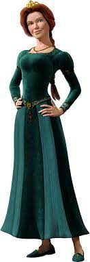
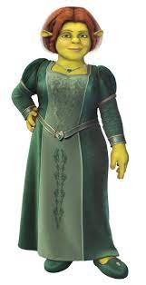
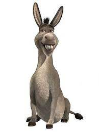
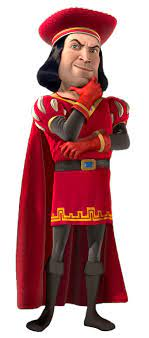

Shrek
He’s an Ogre, who used to live alone and in solitude, however, his life and himself changed after he met his friend Donkey as well as other people along the way. He was wed to Princess Fiona, the daughter and only child of Queen Lillian and the late King Harold
Princess Fiona
 Fiona first meets Shrek when he crashes into the roof of her tower after being thrown by Dragon. Wearing pieces of armor taken from dead knights in the Dragon's Keep, Shrek is mistaken by Fiona to be her "Prince Charming". She pretends to sleep, but instead of getting her true love's kiss, Shrek shakes her awake and unceremoniously drags out of her tower. He is all but the knight-in-shining-armor that Fiona expected
Donkey
Donkey is first seen on a leash and muzzled with his owner in a line, where fairy tale creatures are being given to the Duloc Guards for money. Their captain is hesitant to accept Donkey until she proves he can talk, which he refuses to do, causing her to be taken away - however, Donkey accidentally gets hit by fairy dust from a fairy (which Peter Pan was taking in to sell), giving him the ability to fly, much to his joy. Donkey exposes himself by boasting as he soars upwards, but then the magic wears off, causing him to drop to the ground. The guards tackle him, but he escapes and flees into the forest, until he bumps into an ogre. Though seemingly displeased, the ogre scares the knights away instead of surrendering Donkey as they order.
Lord Farquaad
Farquaad had banished all of the fairytale creatures from his land, forcing them to take refuge in Shrek's swamp. Back at his castle, Farquaad tortures Gingy into revealing the location of the other fairytale folk that he hasn't been able to capture yet or banish. Just as Gingy was about to reveal what he knows, the captain of the guards arrives and announces that they have found the Magic Mirror. After eating Gingy whole, Lord Farquaad asks the mirror if Duloc is the perfect kingdom of them all. The magic mirror tells him that he's not truly a king as he isn't descended from royalty, but he can become one if he marries a princess.
Dragon
While searching for the princess, Shrek and Donkey become separated within the castle. Dragon chases after Donkey after he accidentally awakens her, and nearly eats him before Shrek intervenes. Dragon uses her tail to throw Shrek, who ends up landing in Fiona's tower. Dragon traps Donkey on a stone pinnacle, intent on eating him like so many other intruders. Out of desperation, Donkey smooth talks Dragon with compliments, causing her to become infatuated with him and spare his life. Dragon grabs an unwilling Donkey with her mouth and hauls him back to her lair.